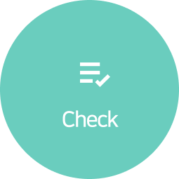
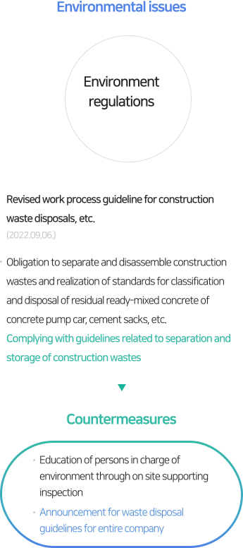

SUSTAINABILITY
Environmental
- Environmental management policy
-
As Dongbu Corporation is a “socially responsible premium company” that seeks to impress clients and provide profits and
satisfaction to shareholders, to make ourselves a wholly sustainable construction company representing Korea, we practice
environmental management in the following manner.- Practice green management to protect the environment.
- Comply with domestic and foreign environmental rules and all regulations.
- Consider environmental risks of all business execution procedures.
- Respond to climate changes by engaging in greenhouse gas reduction activities.
2023.03.22
CEO of Dongbu Corporation
Objectives of environmental management
- Zero Environmental Accidents
Effective Environment Management
Construction Management Prioritizing Stakeholders and Environment- 01
- Establishment of Efficient Working System
- Establishment of environmental task criteria complying with legal criteria
- Continuous provision and sharing of environmental information
- Activation of environmental communication
- 02
- Ensuring Basic Capabilities and Strengthening Professional Capabilities
- Ensuring basic capabilities of all employees for construction environments
- Strengthening professional capabilities of persons in charge of site environments
- Strengthening supporting capabilities of persons in charge of headquarters
- 03
- Complying with Construction Environment Rules
- Performing continuous environmental education
- Strengthening supports and inspections on environment management
- Establishing efficient environmental inspections at construction sites
Environmental management
system and process
- Operating pre-review policy to perform eco-friendly business.
-
- Operating an objective management policy reflecting rules and all regulations to perform eco-friendly business.
- Implementing environmental impact reduction measures suitable for business conditions and in consideration of construction plan
Establishment of Eco-Friendly Business Plan
- Performing tasks to prevent environmental accidents and
activities to reduce environmental contamination -
- Preventing environmental accidents by operating
our own environmental inspection policy - Ensuring and improving appropriateness of environmental
management by utilizing a third-party inspection policy - Supporting partners and mutual cooperation
to achieve environmental
- Preventing environmental accidents by operating
Prevention ofenvironmental accidents
- Cultivating environmental capabilities through developments of
new technologies and systematic education -
- Developing new eco-friendly technologies/construction methods
- Enhancing environmental awareness and strengthening
environmental management capabilities through systematic
environmental education and training
Strengthening environmental management capabilities
To execute business in an eco-friendly manner, Dongbu Corporation is operating the following processes.
-
Establishment of guideline
for site environment
Analyses and predictions of
environmental risks
Reviews of policies and
collecting residents’ opinions
-
Education to ensure capabilities
of members Complying
with eco-friendly operation criteria
Establishment of
prevention/response system
against emergency
- 
-
Identifying appropriateness of
environmental management
Monitoring external
environmental changes

-
Correction of nonconformities and
prevention of re-occurrence
Continuous improvement to
achieve benefits
Status of environmental management system certification
Dongbu Corporation established a system to minimize all environmental impacts involved in business activities, obtained ISO 14001 standard in 1996, and has abided by it so far.
KS I ISO 14001:2015
- Organization of certification
-
- TUV NORD KOREA Ltd
- Date of certification issue
-
- 2022.06.12
- Expiry date of certification
-
- 2025.06.11
- Range of certification
-
-
Civil engineering, constructions of buildings, houses, plants
(including chemical, power, environmental, industrial plants),
and firefighting facilities, electrical works, design and
development of telecommunication constructions,
project management, purchases, constructions, operations,
and services
-
Civil engineering, constructions of buildings, houses, plants
Response to environmental issues
For sustainable green construction, Dongbu Corporation is establishing and practicing countermeasures to address various environmental issues.
- 
-
- Environmental issues : Inspection on external environment
- Major violations of environment regulations for construction sites : Insufficient control measures for scattering dusts, exceeding of regulatory standard for noise and vibration Strict pre-management for zero-violation of regulations
- Countermeasures
- Performing pre-measures activities to prevent risks related to site environment such as control measures for scattering dusts and efforts to reduce noises
- Prompt discussion on complaints related to noises
-
- Environmental issues : Environment regulations
- Revised work process guideline for construction waste disposals, etc.(2022.09.06) : Obligation to separate and disassemble construction wastes and realization of standards for classification and disposal of residual ready-mixed concrete of concrete pump car, cement sacks, etc. Complying with guidelines related to separation and storage of construction wastes
- Countermeasures
- Education of persons in charge of environment through on site supporting inspection
- Announcement for waste disposal guidelines for entire company
-
- Environmental issues : ESG
- Revision of guidelines for operation of greenhouse gas objective management(2022.03.23.) : Greenhouse gas reduction management
- Countermeasures
- Setting objectives of greenhouse gas uses and monthly monitoring
- Formulating climate change scenario and setting response system
Construction waste processing flow chart
- Supplier selection and contract : management - Receive quotes from 3 or more vendors Electronic contract after selection request
- Discharge report : management - Reporting construction waste dischargers, Receipt and storage of certificates, Issue correct system ID
- collection : construction - Thorough separation, by nature Supplier Waste Discharge training and control, Strict measures for companies violating separate discharge, Arm Roll box management
- take out : management - Fill out the discharger handover form (reservation input), Check the shape and weight, After completion of export evidence 3 year storage
- Write a handover note : management - Receipt of weighing certificate, Characteristics and actual throughput, match check
- Settlement and payment : management - Handover details, invoice quantity, and Comparison of claims Management of emission performance against design, Payment to the company specified in the contract payment